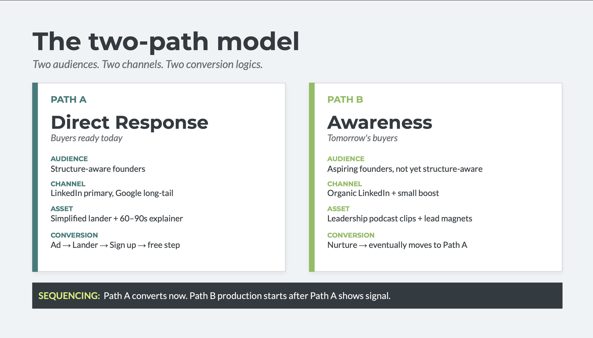
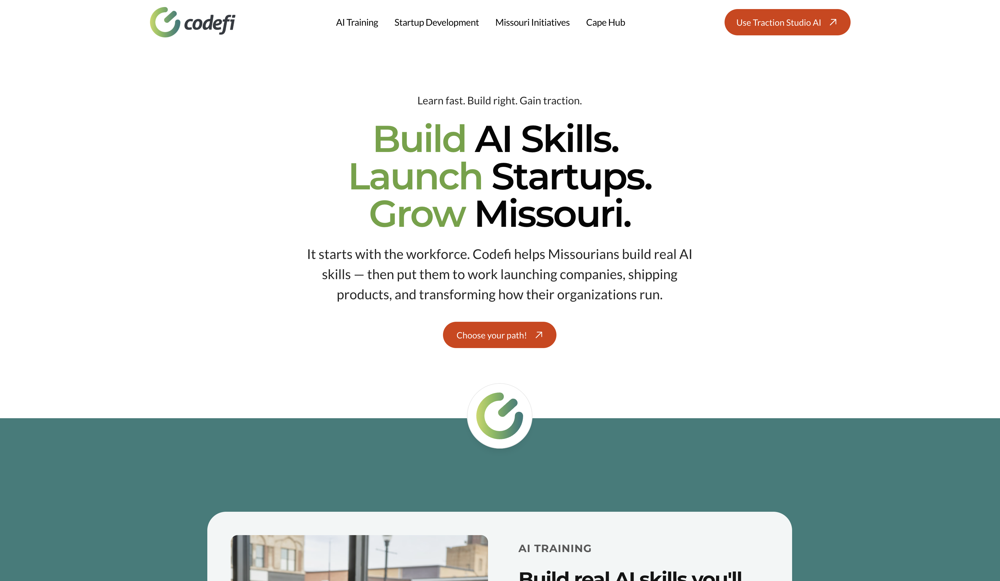
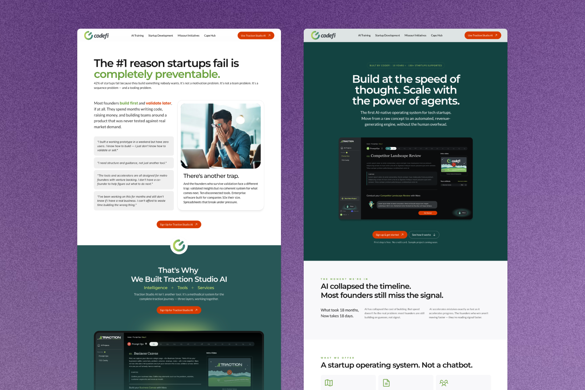
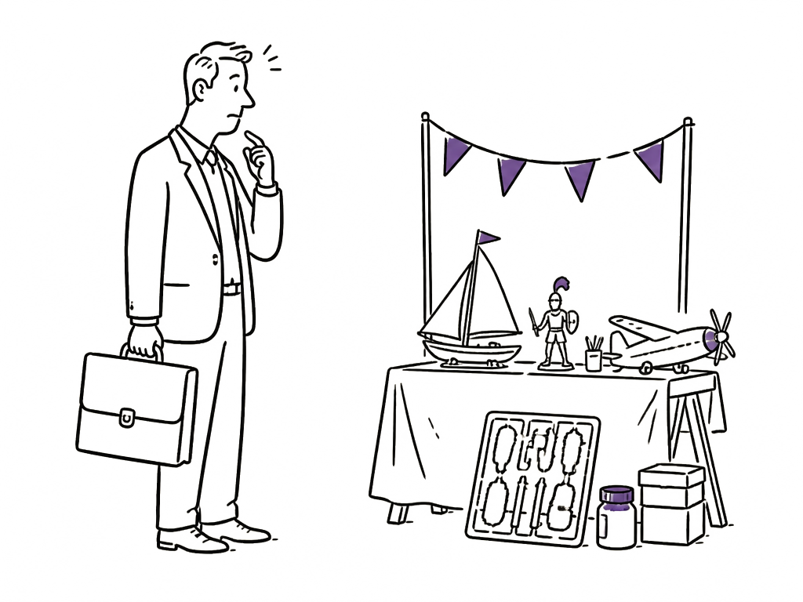
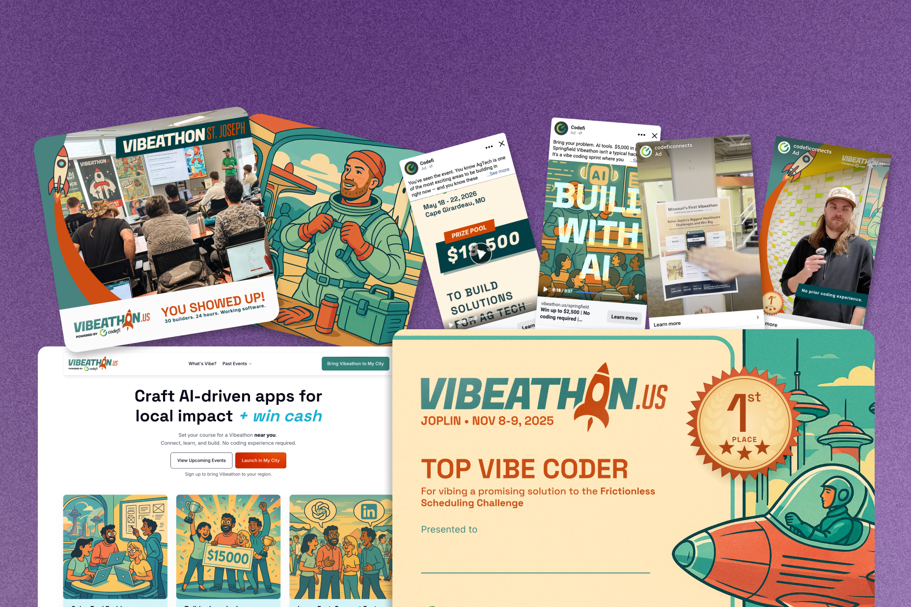
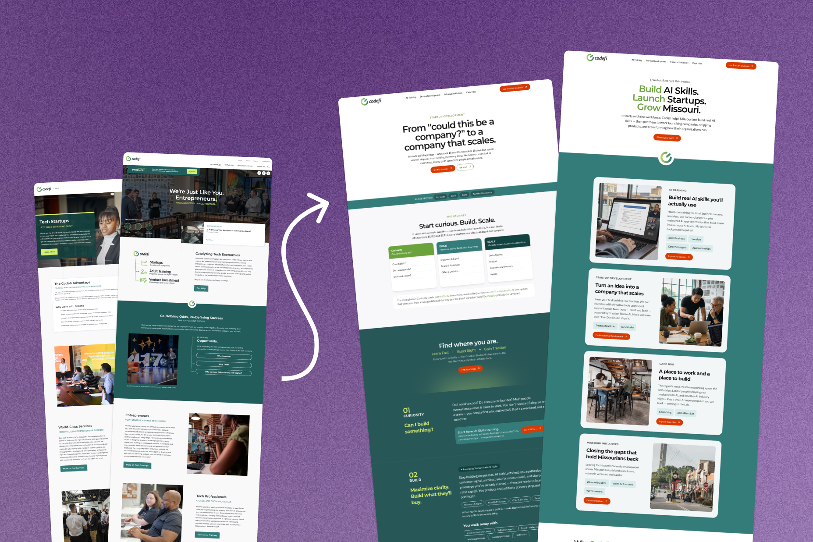

Writing the strategy the company adopted, then running the paid motion behind it



I was hired to design a product. Codefi knew I had a marketing background, and I took it further than the role asked for: two strategies I wrote got adopted, and the paid work I ran is the part with hard numbers behind it.
Two strategies, adopted: a GTM thesis after the funnel stopped converting, then a content diagnosis during the B2B pivot. Both written up, both with evidence attached.
Ads that worked: 60%+ of attendees across four in-person events attributed to ads I planned, made, and ran.
Still in progress: the team adopted both strategies, but the builds behind them aren't finished, so there's no outcome data yet.
None of this was in my job description. I noticed something wasn't working, wrote up what I thought would fix it, and handed it over. The team ran with it, twice.
The baseline: 2,500+ visits, 0 conversions
Heading into our Scale beta, our landing page had driven 2,500+ views and zero conversions. The campaign was optimizing for traffic when it should have been optimizing for conversion events, and the lander behind it had been built fast and never revisited.
I had been pushing for a rework and, as the only designer, did not have the bandwidth to take it on alongside the product work. The beta approaching is what moved it up the list.
The meeting didn't land on an answer, so I wrote one up
A team meeting to pick a lane on messaging ended without a decision. I came back with a written proposal and a short deck.
What I proposed, and what I turned down
I independently came back with a written proposal and a short deck: niche down to founders who already believe in structure, simplify the lander around an explainer video that does double duty as a qualifier, and build an audience through leadership content in parallel. The team formally adopted it.
The obvious alternative was to keep both audiences and split the page, speaking to each in its own section. I argued against it. That page has to win two arguments at once, that a founder needs a tool like this at all and that this is the right one, and the second argument is wasted on anyone who hasn't accepted the first.
Distribution is why video won. Our paid traffic comes off Meta, where people arrive mid-scroll from video. Landing them on a wall of text is a format change they don't make, and a founder deciding whether a product fits gets more from ninety seconds of it running than from a page of screenshots.

Someone else called the pivot. The content it exposed was mine.
Codefi moved acquisition toward B2B because B2C wasn't gaining traction fast enough and the B2B relationships already existed. I owned what that move exposed.
Why the company moved, and what it uncovered
B2C wasn't converting quickly enough to justify the time it needed, and Codefi already had B2B relationships it could reach immediately. Going where the audience already existed was the faster route to results, so B2B became the near and medium-term play. B2C is still running, smaller and slower.
What it exposed was the content, and that part is mine. The easy reading was that the content was fine and the wrong people were arriving. It wasn't fine. It had been written against an announcement deadline and never went back for a second pass, and we had never properly researched the B2C audience in the first place, so it was landing with neither. Analytics and Clarity recordings showed people bouncing before they engaged with it, though that signal is softer than it sounds: the traffic was arriving from campaigns an outside agency was running, and the targeting and creative were both mediocre, so I could never cleanly separate a content problem from a traffic problem. I wrote that up the same way as the original GTM thesis, with the evidence attached, and the team adopted it. I'm leading the rewrite.

B2B buyer arrives built for B2CBoth theses needed better raw material to execute on, so I built Codefeed for that separately. That same instinct had already been running months earlier, on paid ads, with spend and attendance numbers attached to it.
Ads across four hackathons, one attribution number
More than 60% of attendees found the event through my ads, measured, not estimated.
What I owned
Codefi also retains an outside marketing agency, and for a stretch we were producing creative against the same campaigns. Mine ran roughly twice their click-through on conversion-aligned metrics. It is the only benchmark I have where my work was measured against professionals doing the same job, for the same company, on the same audience.
Vibeathon is Codefi Foundation's AI hackathon series across Joplin, St. Joseph, Springfield and Cape Girardeau. On all four I owned the paid motion end to end: ad strategy, creative production, budget allocation, and the reporting that told us whether any of it worked.
Spend was weighted to the first event on purpose. Joplin ran hotter than the three that followed because it was the one that could still teach us something: several creative types, several messaging angles, enough budget behind each to tell which ones people actually responded to. The three after it ran on that read, structured as cold prospecting plus retargeting.
LinkedIn came out of the standing rotation on cost. Cost per lead there ran far above Meta for the same audience, so it stopped being a default. It did not stop being useful: for campaigns about venture philanthropy or startup capital I put it back in, because that is where those particular people are and CPL is the wrong metric when the audience only exists on one channel.
I also built the vibeathon.us brand and visual language, in collaboration with another designer who has since left Codefi. It looks nothing like the rest of B2B software, which was the point: the audience we wanted had never been to a hackathon.

The clearest single data point: Show Me Network Week
One co-hosted event is fully attributable to me. I ran the digital channels solo: paid ads, organic social, and web presence. That meant the landing page, every ad creative including carousel and video, campaign setup and targeting, no agency involved. Event logistics, venue, and speakers were handled by the co-host; email marketing wasn't part of the mix.
Budget was roughly $50 a day, split across three co-hosted events over about a month. The prior year's attendance, before I joined, was 5 to 20 people. This year it was around 135.
Off a hardcoded site, onto a CMS the team can run
Codefi's marketing site had no CMS, so every copy change meant a dev ticket.
Why this was worth a designer's time
The site was infrastructure. The GTM thesis, the B2B content rewrite and the event pushes all depend on a site that can change the same day a decision does.
The platform I was asked to consider, and why it lost
Leadership started somewhere else. We already paid for GoHighLevel as our CRM and it ships a website builder, so the CTO asked me to evaluate building on that instead. I did, and it lost on ceiling: the builder could not get me to a result I would put my name on, and the sites people were shipping out of it were visibly clunky. Showing that was the only way to make the argument, so I built enough in it to demonstrate where it ran out.
Framer won partly for a reason that has nothing to do with features. I had built the ConGenius site on it and knew it cold, which meant I could move fast without the rebuild becoming its own project.
I structured it around three live content collections the team updates themselves, with no dev dependency for routine changes. There had been two, blog and news, and they had blurred into each other: Codefi does enough different things that one blog was carrying learner stories and technical tips in the same feed, and the AI training programmes made that worse. Splitting AI insights out gave each a reader. A fourth is under discussion now that the blog has drifted toward case studies and announcements need somewhere of their own. The org-wide messaging update that came with the B2B pivot was the first real test of the whole thing.

Following a company-wide restructure and the pivot toward B2B, the D2C marketing function consolidated to me, the CEO, and one coordinator. The CEO now works directly with me to set and execute digital strategy. No title change came with it. The scope did.
I've been pushing to keep a direct founder-facing channel alive alongside the new B2B motion, so the company isn't fully dependent on a handful of institutional partnerships.